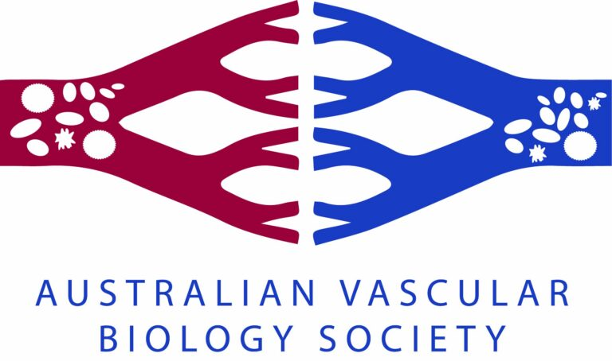
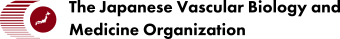
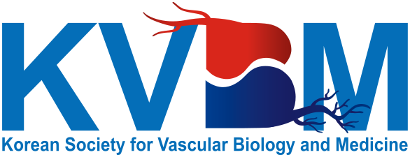

Next: 7th AAVBM 2027 · BPEX, Busan, Korea · October 7–9, 2027
Asia-Australia Vascular Biology Meeting
A forum to exchange ideas and results of cutting-edge vascular biology research, from basic to translational science, across Asia and Australia.
About AAVBM
The Asia-Australia Vascular Biology Meeting (AAVBM) was launched in 2015 by the vascular biology societies of Australia, Japan and the Republic of Korea. Its programs bring together renowned speakers and early-career researchers to discuss vascular biology at every level, from basic mechanisms to translational research.
AAVBM is held jointly with the annual meetings of its host societies, rotating among the member countries.
Relationship with IVBM
AAVBM serves as the Asia-Australia point of contact for the International Vascular Biology Meeting (IVBM), which its host societies organize together with the North American Vascular Biology Organization (NAVBO) and the European Vascular Biology Organisation (EVBO).
IVBM 2026 was hosted by AVBS in Adelaide, Australia, on September 6–10, 2026, chaired by Professor Natasha Harvey (Centre for Cancer Biology, University of South Australia and SA Pathology), and members of JVBMO and KVBM served on its International Advisory Committee:
- JVBMO: Tetsuro Watabe, Li Kun Phng, Yoshiaki Kubota, Shigetomo Fukuhara, Yoshikazu Nakaoka, Kyoko Hida
- KVBM: Gou Young Koh, You Mie Lee, Pilhan Kim, Junyeop Lee, Injune Kim
Host Societies

Australian Vascular Biology Society
AVBS
PresidentMichael Hickey, PhD
avbs.org →
Japanese Vascular Biology and Medicine Organization
JVBMO
PresidentKyoko Hida, DDS, PhD
jvbmo.umin.jp →
Korean Society for Vascular Biology and Medicine
KVBM
PresidentJin Han, MD, PhD
kvbm.org →Meetings
Next meeting
7th AAVBM 2027 · Busan, Korea
October 7–9, 2027
- Official title
- Asia-Australia Vascular Biology Meeting 2027 (AAVBM 2027)
- Venue
- Busan Port International Exhibition & Convention Center (BPEX), Busan, Republic of Korea
- Hosted by
- AVBS, JVBMO, KVBM
- Organized by
- Korean Society for Vascular Biology and Medicine (KVBM)
- Official website
- Under development
- Contact
- KVBM Secretariat · kvbm@peoplenvalue.com
Watch the promotional video on YouTube → · AAVBM 2027 information (KVBM) →
Future meeting
8th AAVBM 2029 · Osaka, Japan
To be held with the JVBMO 2029 annual meeting. Dates will be announced here.
Past meetings
-
2026
IVBM 2026 · Adelaide, Australia
September 6–10, 2026 · Adelaide Convention Centre
In 2026, the Australian Vascular Biology Society (AVBS) hosted the International Vascular Biology Meeting (IVBM) in Adelaide. AVBS’s turn to host AAVBM was therefore waived. Members of JVBMO and KVBM served on the IVBM 2026 International Advisory Committee.
-
2025
6th AAVBM · Tokyo, Japan
November 1–2, 2025 · Juntendo University (Hongo-Ochanomizu Campus)
Co-organized with the JVBMO annual meeting.
-
2023
5th AAVBM · Seoul, Korea
September 14–15, 2023 · Conrad Seoul
Held jointly with the KVBM annual meeting and the 12th International Congress on Lipid & Atherosclerosis (ICoLA, KSoLA).
- 2022
-
2020
21st IVBM 2020 · Online (hosted by Korea)
September 9–12, 2020 · Online
The International Vascular Biology Meeting (IVBM) 2020 was hosted by Korea, co-chaired by Hyo-Soo Kim and Gou Young Koh. Originally planned for Conrad Seoul, it was held online only because of the COVID-19 pandemic.
-
2019
3rd AAVBM · Sydney, Australia
September 19–22, 2019 · The University of Sydney
Held as the Inaugural Joint Annual Scientific Meeting of AVBS/ANZMS/AAVBM.
-
2017
2nd AAVBM · Osaka, Japan
December 8–10, 2017 · International House, Osaka
Co-organized with the JVBMO annual meeting (CVMW2017).
-
2015
1st AAVBM · Busan, Korea
October 15–16, 2015 · MBC Samjoo Art Hall
Co-organized with the KVBM annual meeting.
-
2014
18th IVBM 2014 · Kyoto, Japan
April 14–17, 2014 · Miyako Messe
The International Vascular Biology Meeting (IVBM) 2014 was hosted in Kyoto, co-chaired by Issei Komuro and Yasufumi Sato.
Contact
For enquiries about AAVBM, please use our contact form.
This website is supported by the Japanese Vascular Biology and Medicine Organization (JVBMO).